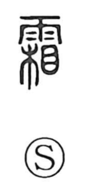

霜

Uncategorized
Kun: shimo | On: so
frost ・ hoarfrost
Explanation
霜 is a phono-semantic character formed with the rain radical above and 相 as the phonetic, which supplies the on reading so. Classical verse in the Book of Odes vividly describes how white dew hardens into frost, capturing the natural process the character names. Early inscriptional forms have even been understood as showing shimobashira—delicate columns of ice that rise from the ground when subsurface water freezes. Because frost is strikingly white, the character naturally extends to images of whiteness and cutting clarity: 霜鬢 evokes temples turned white as if touched by frost, 霜害 names the damage frost inflicts on crops, and 霜刃 suggests a blade bright and keen like frost.